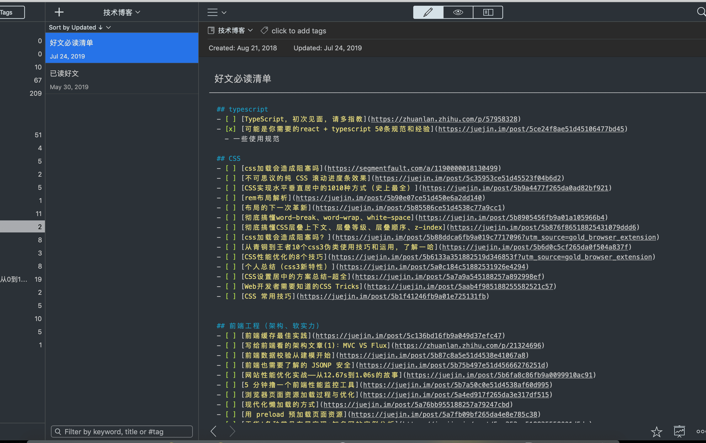

的确，有些标题党了。起因是微信群里，有哥们问我，你是怎么学习前端的呢？能不能共享一下学习方法。一句话也挺触动我的，我真的不算是什么大佬，对于学习前端知识，我也不能说是掌握了什么捷径。当然，我个人的学习方法这篇文章已经在写了，预计这周末会在我个人公众号发布。而在此之前，我想展(gong)示(xiang)一下，我平时浏览各个技术网站，所记录下来的文章。如果你能做到每日消化一篇，或许，你只要一年，就能拿下各个大厂 offer！
不由感慨，好文太多！吾等岂能浪费，还整日怨天尤人。

收藏截止时间：2019-07-24 11:50:49
以上包括我已读还未移至已读的记录中（主要是由于感觉还需再度）。所有文章，我都会好好学习，没办法，毕竟比较菜。还有太多需要学习。
欢迎关注我个人微信公众号：全栈前端精选
关注公众号： 【全栈前端精选】 每日获取好文推荐。
公众号内回复 【1】，加入全栈前端学习群，一起交流。